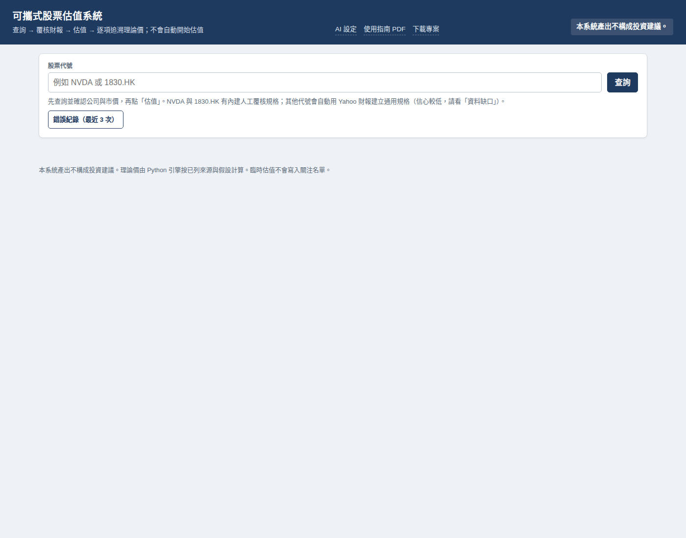
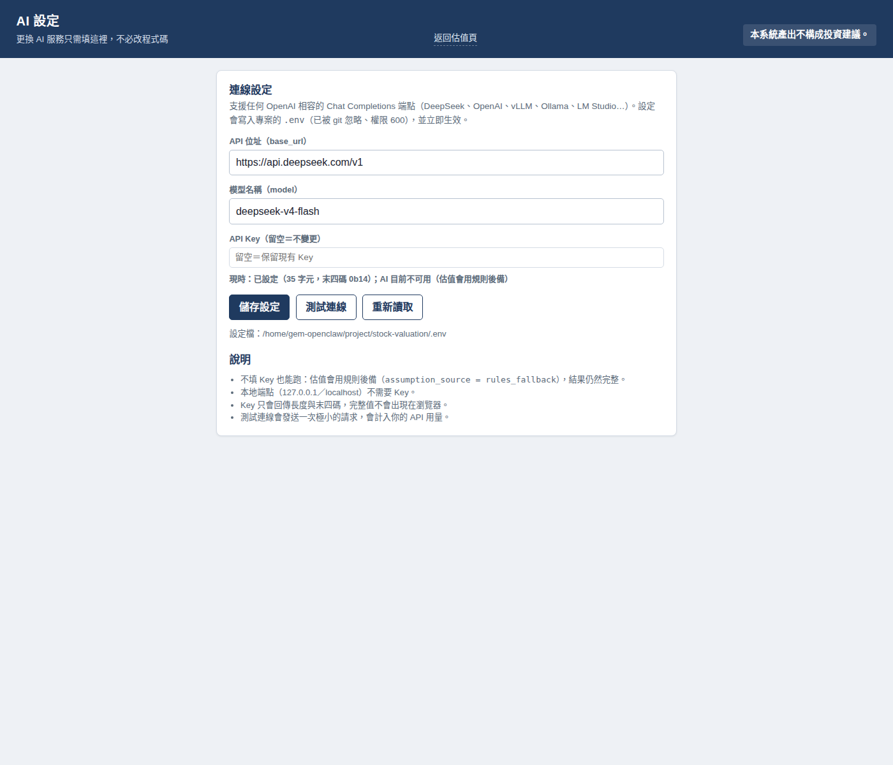

可攜式股票估值系統 — 使用指南
版本 1.1 ｜ 2026 年 11 月 ｜ 繁體中文 ｜ 對應介面：本指南截圖與交付版一致
本系統產出不構成投資建議。理論價由 Python 引擎按已列來源與假設計算。
本版重點：原有七個結果分頁完全不變，新增的財報覆核、歷史圖表、歷史與預測並列、AI 用量，
全部整合在同一個結果頁內（除了填 API Key 的「AI 設定」頁）。不需要切換到另一個工作台。
1. 啟動系統
cd ~/stock-valuation
python3 -m venv .venv
.venv/bin/pip install -r requirements.txt
# 啟動網頁（預設 http://127.0.0.1:8765）
.venv/bin/python -m src.web
想讓它常駐（關掉終端機也繼續跑），見 deploy/README-deploy.md：macOS 用 launchd，其他平台用 systemd 或啟動腳本。
沒有設定 AI 也能完整使用：系統會改用規則後備（assumption_source = rules_fallback），
結果一樣有 Excel、說明與驗證。
2. 查詢股票

圖 1：首頁。輸入代號按「查詢」只會顯示公司與市價，不會自動開始估值。
- 在「股票代號」輸入
NVDA、1830.HK 或其他代號（港股可只輸入 1830）。
- 按「查詢」。畫面上會顯示公司名稱、交易貨幣、交易所、市價與市價日期。
- 沒有內建人工覆核規格的代號會提示「通用規格、信心較低」，估值後請先看「資料缺口」。
網址可以直接帶代號：/?ticker=NVDA 開啟即查詢；加上 &view=last 會一併打開上次結果，方便日後回看。
3. 設定與執行估值
- 打開「進階選項」可改估值日（澳門時間）或勾選「不使用語言模型」。
- 按「估值」。若 AI 可用，系統會先彈出「這次估值 AI 會做什麼」：逐項列出工作、
次數與數量（例如 1 次請求／178 個財報科目、11 個預測期 × 2 項），
並標明哪些步驟不會執行及原因（例如內建規格已鎖定假設）。確認後才開始。
另可按「AI 工作預覽」只看清單、不啟動估值。
- 執行期間會顯示每一步的狀態、進度條與「預估剩餘約 N 秒」。估時以最近十次完成紀錄
的中位數計算，並註明樣本數；若已超出粗估，會直接說明「已超出粗估，仍在執行」，
不會假裝還在預期內。資料不足時顯示「資料不足」，不編造數字。
- 可隨時按「停止」，已完成的步驟會保留，這次不產生結果檔。
4. 結果頁與原有七個分頁
估值完成後，結果頁最上方是官方數字（理論價、市價、WACC、終值 g、驗證結果），
下面仍然是原有七個分頁：
| 分頁 | 看什麼 |
|---|
| 摘要 | 官方理論價（基準）與五情境、市價、WACC、驗證結果。本版在這一頁下方加入估值歷史圖表。 |
| 計算 | 用試算表公式重算，並與 JSON 官方理論價核對（差距應在 ±0.5% 內）。 |
| 情境假設 | 悲觀／基準／樂觀／靜態／9%靜態的假設對照。 |
| 增長假設對照 | 不同估值法下未來多年的增長假設。 |
| 投行估值比較 | 只填本次真實抓到的來源；沒有就留空，不捏造。 |
| 來源 | 所有數據來源與日期。 |
| 資料缺口 | 取不到的資料與已試來源。本版在這一頁加入「歷史與預測並列」「預測理由」「由理論價往回追溯」。 |
新增內容以「區塊」形式出現在同一頁，沒有第八個研究分頁；
頁面上方永遠只有原本七個分頁。
5. 估值歷史圖表（摘要分頁下方）
- 藍線＝每次估值的理論價；灰色虛線＝該次估值當時的市價（不是今天的價格）。
- 兩線之間的區域按方向填色：理論價高於股價填綠、低於填紅，交叉處會即時切換。
- 每次估值累積一個點；同一天重跑會各自保留，圖上以 ×N 標示並左右錯開，不會蓋掉或合併。
- 互動：滑鼠或手指點資料點即可選取（命中範圍比圓點大）、鍵盤可用 Tab＋Enter；
「◀ 上一筆／下一筆 ▶」逐筆巡覽；「比較兩筆」可對照兩次估值的理論價、市價、差距與 WACC；
「全部／近一年／近五次」切換顯示範圍。
6. 財報逐項覆核與調整
結果頁中間的「財報逐項覆核與調整」可展開，這是覆核與改數的地方：
- 選「損益表／資產負債表／現金流量表」，逐項列出 Yahoo 收集到的全部科目
（NVDA 共 178 項），不是只有幾個摘要指標。
- 預設按金額大小排序，重要的先看到；比率、每股與股數另列其後，
不會把 0.15 的比率和 215,938 百萬的金額混在一起比較。
- 左側有藍色邊的列是「模型輸入」（營收、EBIT、D&A、Capex、股數），
代表這些數字真的會進入估值。
- 要改數字：按該列「修改」→ 選財報期、填新值與原因→ 儲存。
沒有填原因會被拒絕，不能正式採用。
- 改過的列會標色；下方「修改紀錄」保留時間、科目、財報期、修改前、修改後、
原因與「對估值的影響」，也可以刪除（刪除即回原值）。
套用方式：營收、EBIT、D&A、Capex、股數這五項會以「比例」套用到下次估值的模型輸入，
所以預測與理論價會一起改變；其他科目只留痕、不改變估值（介面會寫明）。
調整紀錄會寫進 Excel 的「金額調整紀錄」，不必靠記憶。
7. 歷史與預測並列、預測理由
「資料缺口」分頁下方：
- 歷史與預測並列：最近四個已公布財年、估值基準年、每個預測期放在同一張表，
欄位含營收、增長、EBIT、EBIT 利潤率、D&A、Capex、FCFF 與現值。
「實際／基準年／預測」三種列以顏色區分。
- 預測理由：逐年列出增長理由、利潤率理由、再投資理由；點表格任何一列只看該期。
- 由理論價往回追溯：理論價 → 預測 → 理由 → 使用的歷史財報 → 已套用的調整，
五步列出，讓你知道數字從哪裡來。
8. AI 用量與設定
完成後，結果頁上方與「AI 用量」區塊會顯示服務商實際回報的請求次數、輸入／輸出／
總 Token。未回報的請求會標明，不會當成 0。工作量（預估要做幾件事）與實際用量是分開的兩件事。

圖 2：AI 設定頁（唯一允許獨立的一頁）。API Key 只顯示長度與末四碼；留空表示保留原 Key。
更換模型：填 API 位址與模型名稱後按「儲存設定」即時生效，不必改程式碼；
按「測試連線」會發一次極小請求確認可用（會計入你的用量）。本地端點（127.0.0.1／localhost）可不填 Key。
9. 下載的 Excel 包含什麼
結果頁右上「下載 Excel」的檔案除了原有七張工作表，還加入六張研究分頁，共 13 張：
| 工作表 | 內容 |
|---|
| 摘要／計算／情境假設／增長假設對照／投行估值比較／來源／資料缺口 | 與改版前完全相同，內容與用途不變。 |
| 財報覆核 | 逐項財報科目（含各年度值、重要性排名、是否為模型輸入）。 |
| 金額調整紀錄 | 每次修改的時間、修改前後、差異、原因與是否影響估值。 |
| 歷史與預測並列 | 實際財年、基準年與各預測期同表對照。 |
| 預測理由 | 逐年增長／利潤率／再投資理由。 |
| AI 用量 | 請求次數、輸入／輸出／總 Token、未回報次數與明細。 |
| 估值歷史 | 每次估值的日期、理論價、當時市價、差距、WACC、驗證結果。 |
頁面上看不到的資料，Excel 裡也找不到時，代表本次真的沒有該資料，而不是被省略。
10. 交付物
- 使用指南 PDF（本文件）：頁首「使用指南 PDF」下載。
- 專案壓縮檔：頁首「下載專案」，含程式、設定範例、提示詞、測試、部署腳本與文件
（不含 .env、out/、cases/、.git）。
- README 與 CHANGELOG：安裝、CLI、驗收流程與本版變更。
11. 使用時要留意的限制
- 通用規格（非 NVDA／1830.HK）未經逐項覆核，引用前務必先看「資料缺口」。
- 虧損公司（最近年度 EBIT 為負）不適用本模型，系統會拒絕建立並說明原因，不會硬湊數字。
- 財報覆核以年度（或季度）已收集科目為準；修改是「相對比例」，實際套用的基準值可在
Excel「財報覆核」與 calc JSON 對照。
- 估時需要至少數次完成紀錄才有意義；新安裝時會顯示「資料不足」。
verify_fcff 只驗算術一致性，不代表假設合理，也不構成投資建議。